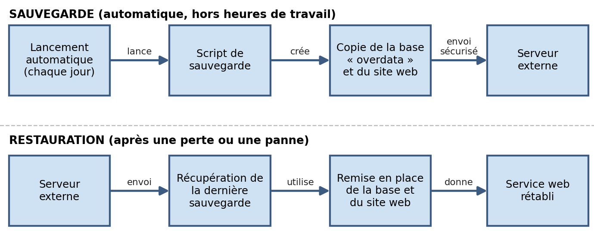
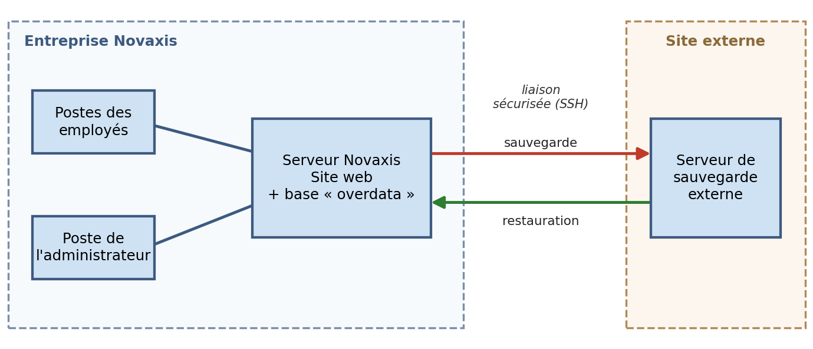
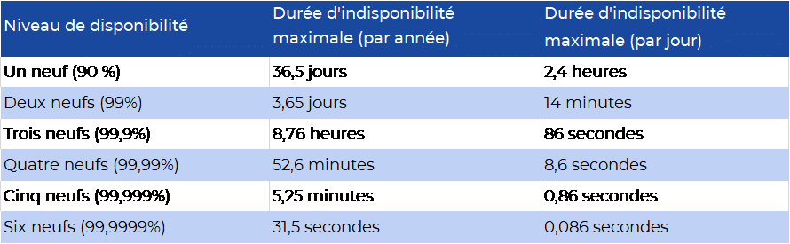

Contexte et demande
L'entreprise Novaxis veut sauvegarder automatiquement son site web et sa base « overdata » vers un serveur externe, pour pouvoir restaurer les données après une perte ou un crash, sans gêner les employés qui utilisent le site toute la journée.
Exigences
| Exigence | Réponse |
|---|---|
| Disponibilité | Le site reste accessible : sauvegarde hors des heures de travail |
| Continuité | Restauration rapide, une journée de données perdue au maximum |
| Fiabilité | Sauvegarde automatique et restauration testée |
| Simplicité | Aucune action demandée aux employés |
Exigences de sécurité
- Envoi sécurisé des sauvegardes vers le serveur externe, par SSH.
- Accès au serveur de sauvegarde réservé à l'administrateur.
- Sauvegardes consultables uniquement par les personnes autorisées.
Solution retenue
- Sauvegarde — un script lance chaque jour, hors des heures de travail, la sauvegarde de la base « overdata » et du site web.
- Transfert — les sauvegardes partent automatiquement vers un serveur externe, par SSH.
- Conservation — plusieurs jours de sauvegardes sont gardés sur ce serveur, pour pouvoir revenir en arrière après une erreur humaine.
- Restauration — récupération de la dernière sauvegarde sur le serveur externe, puis remise en place de la base et du site.
Pour la mise en œuvre en TP, les outils vus en cours sont mysqldump et mysql pour exporter et réimporter la base, scp avec une authentification par clé SSH pour le transfert, et un script shell planifié avec crontab.
Argumentaire
- Solution simple, avec des outils vus en cours (script, SSH).
- Aucune gêne pour les employés : la sauvegarde est automatique et se fait hors des heures de travail.
- Les données sont aussi sur un serveur externe : elles survivent à une panne du serveur principal.
- Plusieurs sauvegardes conservées : retour en arrière possible après une erreur humaine.
- Restauration simple à tester.
Évolutions identifiées
- Recevoir une alerte par e-mail si une sauvegarde échoue.
- Copier les sauvegardes sur un deuxième serveur externe.
- Doubler le serveur web pour améliorer la disponibilité (argumenté avec le tableau des niveaux de disponibilité).
Compétences mobilisées (bloc 1, épreuve E5)
1.5
Gérer des sauvegardesConcevoir une sauvegarde automatique et sa procédure de restauration. Voir l'explication · Voir les preuves
1.4
Vérifier les conditions de la continuité d'un service informatiqueGarantir que le site reste disponible et que les données survivent à une panne locale. Voir l'explication · Voir les preuves
Ces compétences sont reportées dans mon tableau de synthèse E5.
Preuves



Dossier de choix technique (acteurs, exigences, solution, argumentaire)Ouvrir le PDF